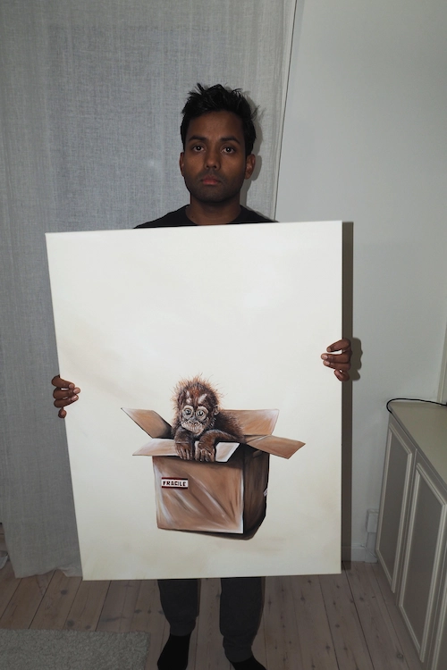
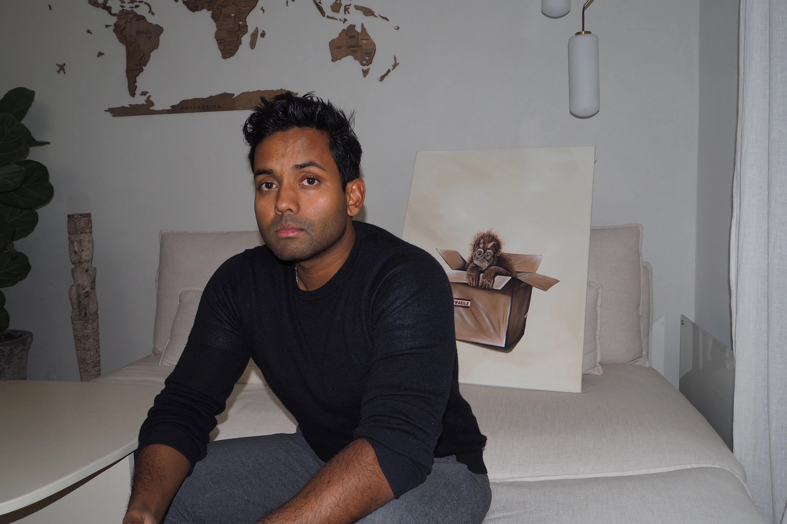
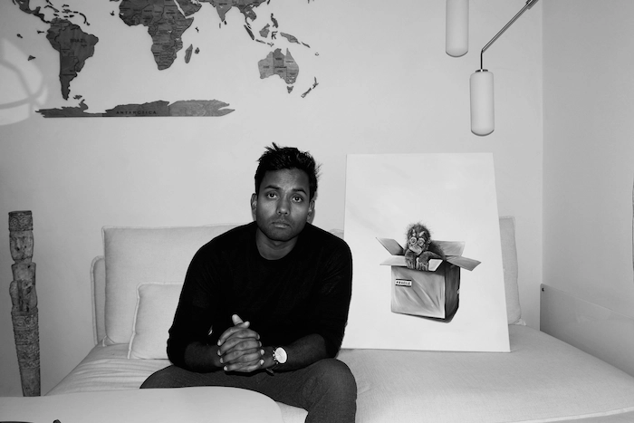
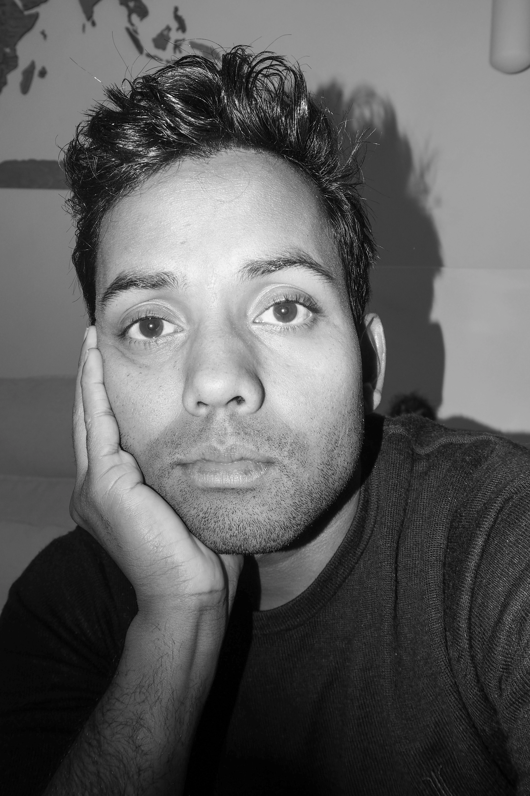
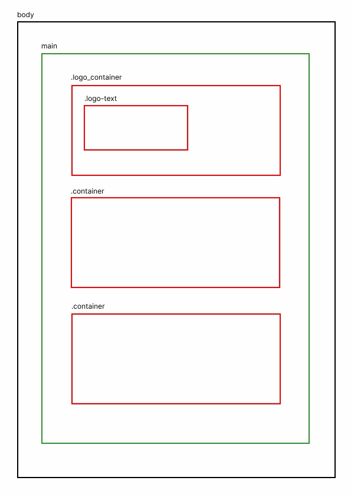
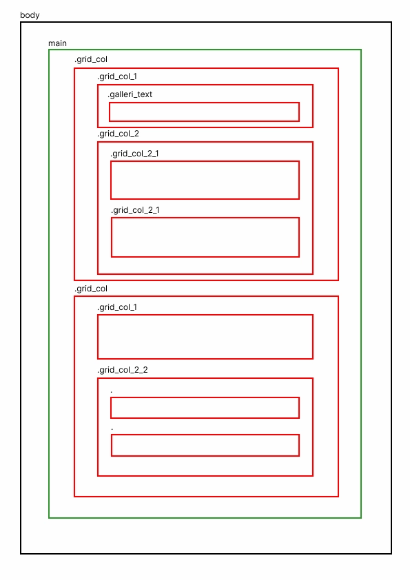

Galleri
Selvom kunst og tegning altid har inspireret Frederik, begyndte han først at male serien "The Art of Fine Living" omkring 2012. Serien er en kritik af det travle moderne samfund, inspireret af 1500- og 1600-tallets franske og hollandske stillleben-kunstnere. Senere rettede han sit fokus mod klodens unikke dyreliv og lærte om vores fælles udfordringer med at bevare naturen. Det er nu hans passion at bidrage til bevarelsen af natur og dyreliv. 20% af salgsprisen for Frederiks værker går til projekter globalt.




Layoutdiagram for forside og galleri

Forside

Galleri